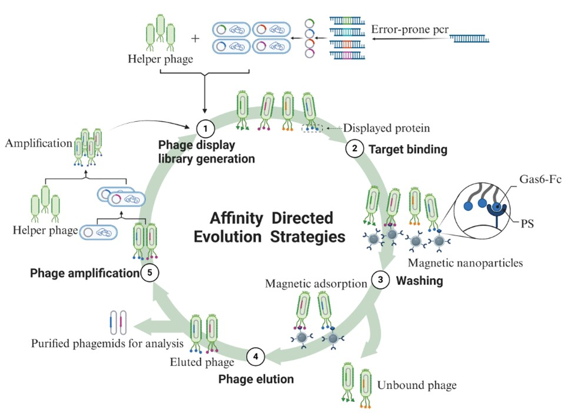

The efferocytosis of tumor cells bytumor-associated macrophages (TAMs) leads to an immunosuppressive environmentand tumor immune escape. Gas6 is a bridge protein between macrophages and tumorcells. How to modify Gas6 to change the immunosuppressive environment needs tobe further explored. In this study, we have developed a novel recombinantfusion protein named Gas6-Fc, which retains the N-terminal domain of Gas6 forbinding to apoptotic cells while substituting the C-terminal domain responsiblefor MerTK receptor binding with an antibody Fc fragment. By engaging with FcRinstead of MerTK receptors on macrophages, Gas6-Fc promotes macrophageactivation and triggers antibody-dependent cellular phagocytosis (ADCP) towardsapoptotic cells. We aim to establish a eukaryotic expression system for theGas6-Fc fusion protein and enhance its affinity towards tumor cells throughdirected evolution strategies, enabling it to effectively compete withendogenous Gas6. Subsequently, we will evaluate the impact of Gas6-Fc at bothcellular and animal levels. The anticipated outcome is that the Gas6-Fc fusionprotein will mitigate the immunosuppressive state within the tumormicroenvironment and augment the efficacy of tumor therapies
Tofurther enhance the functionality of the Gas6-Fc fusion protein, we utilized anefficient directed evolution method known as Phage-assisted continuousevolution (PACE). PACE is a system for directed protein evolution using acontinuous co-culture strategy involving phages and their host bacteria,Escherichia coli, first proposed by the team led by David R. Liu at HarvardUniversity. A phage library containing mutants is constructed through randommutagenesis, and the library sequences are integrated into the genome of thephage structural protein. This protein is fused and expressed with the phagecoat protein, allowing the fusion protein to be displayed on the surface of thephage particles. Subsequently, through affinity screening of the Gas6-Fc fusionprotein with PS, phage particles with high affinity are selected from thelibrary, thereby obtaining fusion protein mutants with higher affinity to PS.
ThePACE system achieves existing high-throughput screening efficiency at a lowercost and can complete over 100 rounds of evolution (complete cycles ofmutation, selection, and replication) in a single experiment. Currently, thePACE system and its various derivative screening strategies have been appliedto a range of areas, including protein-protein interactions, protein-DNAinteractions, tRNA synthesis, DNA-binding proteins, Cas9, and base editors.Although it has been proposed for many years, PACE and other screeningstrategies based on the PACE principle remain the most efficient methods fordirected evolution. According to the investigation and research, we adoptedthis method to achieve the purpose of directional modification for improvingaffinity. The overall system has been optimized. The pComb3XSS vector was used,which is phagemid further optimized on the pComb3 vector and its stability hasincreased. Moreover, two SfiI restriction sites with different temporalsequences were added to facilitate the insertion for purification anddetection. There is an amber stop codon in the vector, and the SpeI/Nhelldouble restriction digestion method is no longer utilized to remove the pIIIprotein gene. The XL1-Blue strain was selected as the host bacterium, and its characteristicsof high transformation and high expression efficiency ensure the librarycapacity of the constructed phage library.